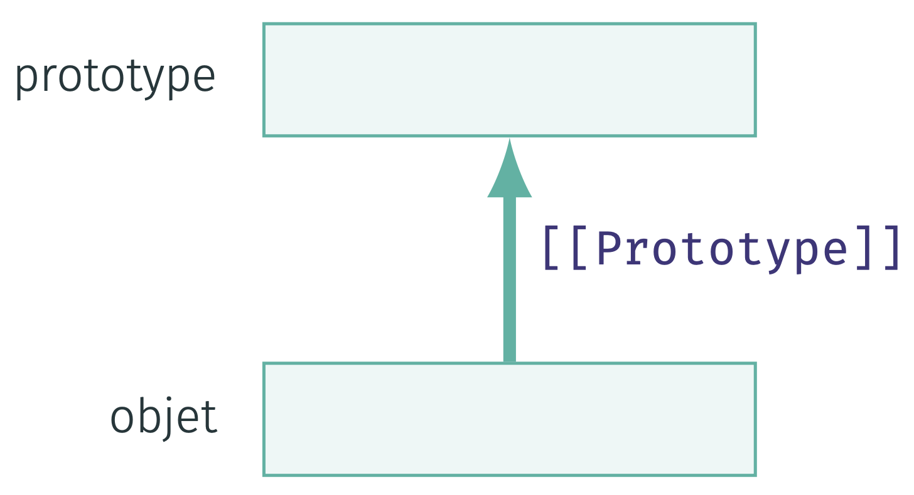
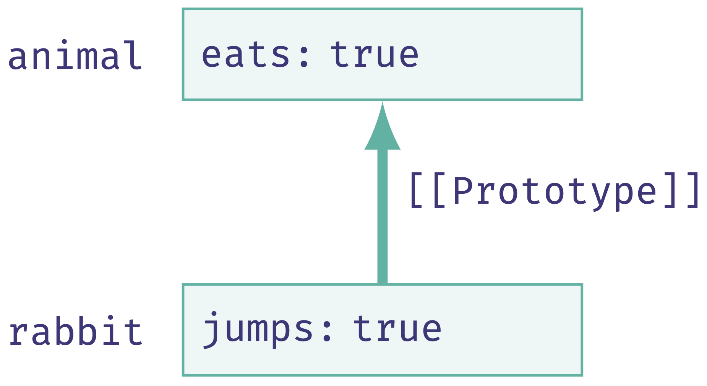
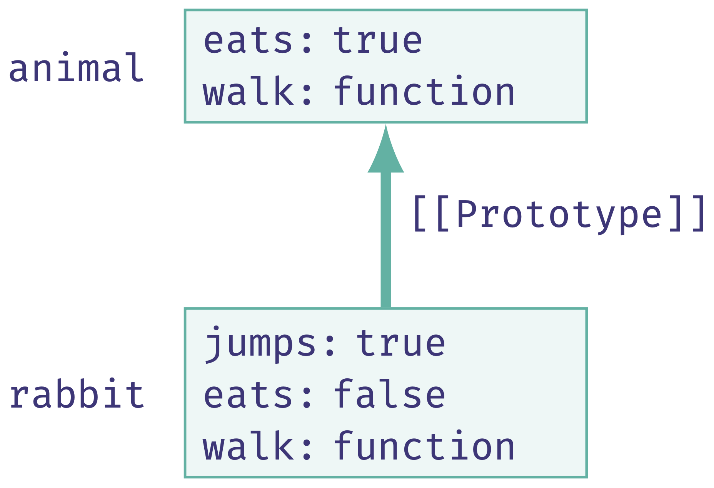
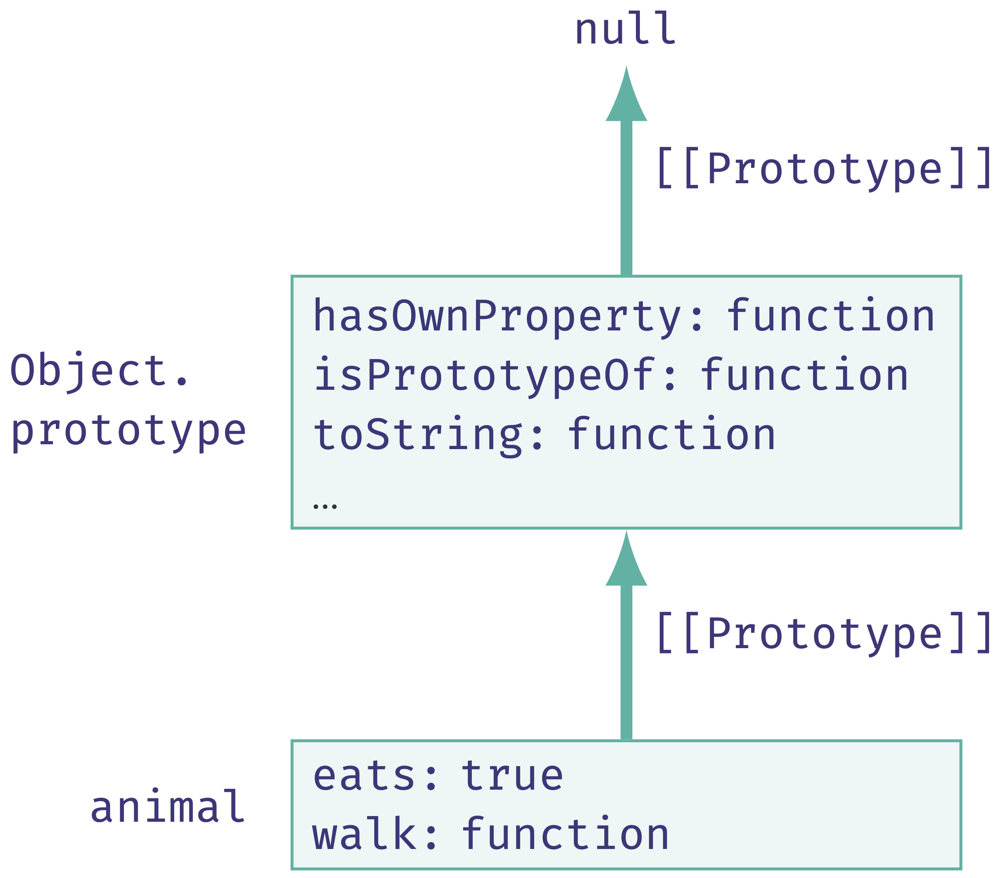
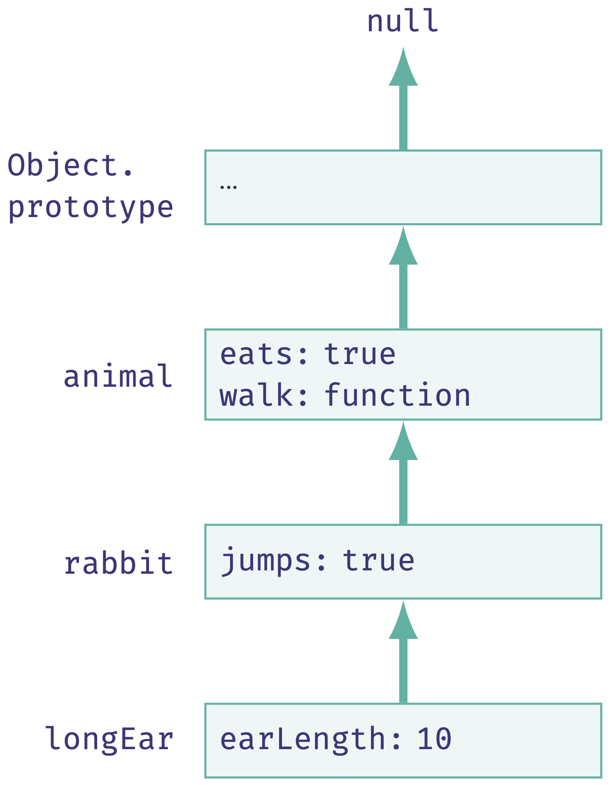
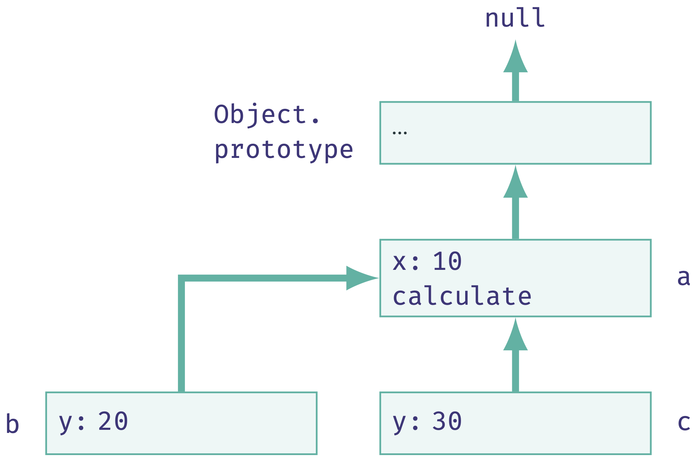
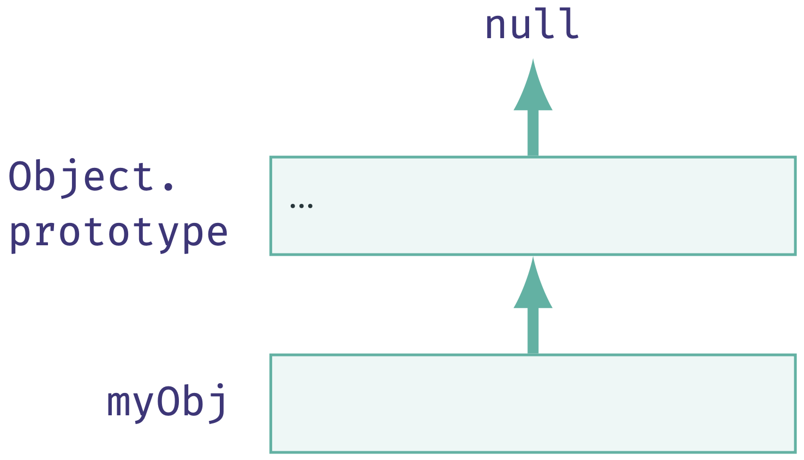
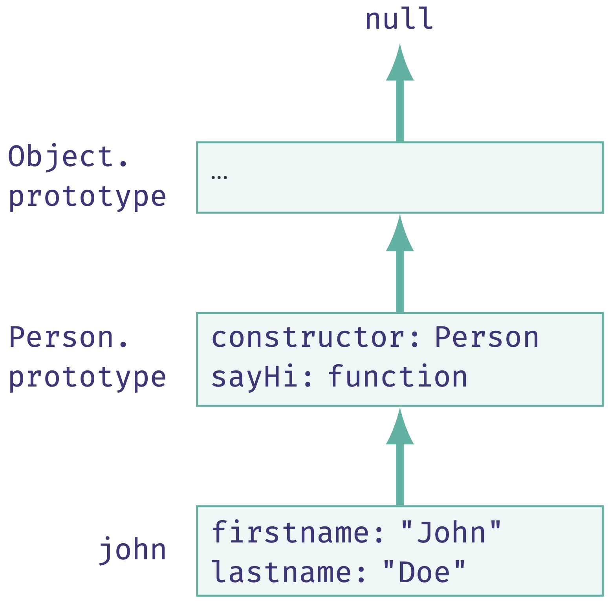
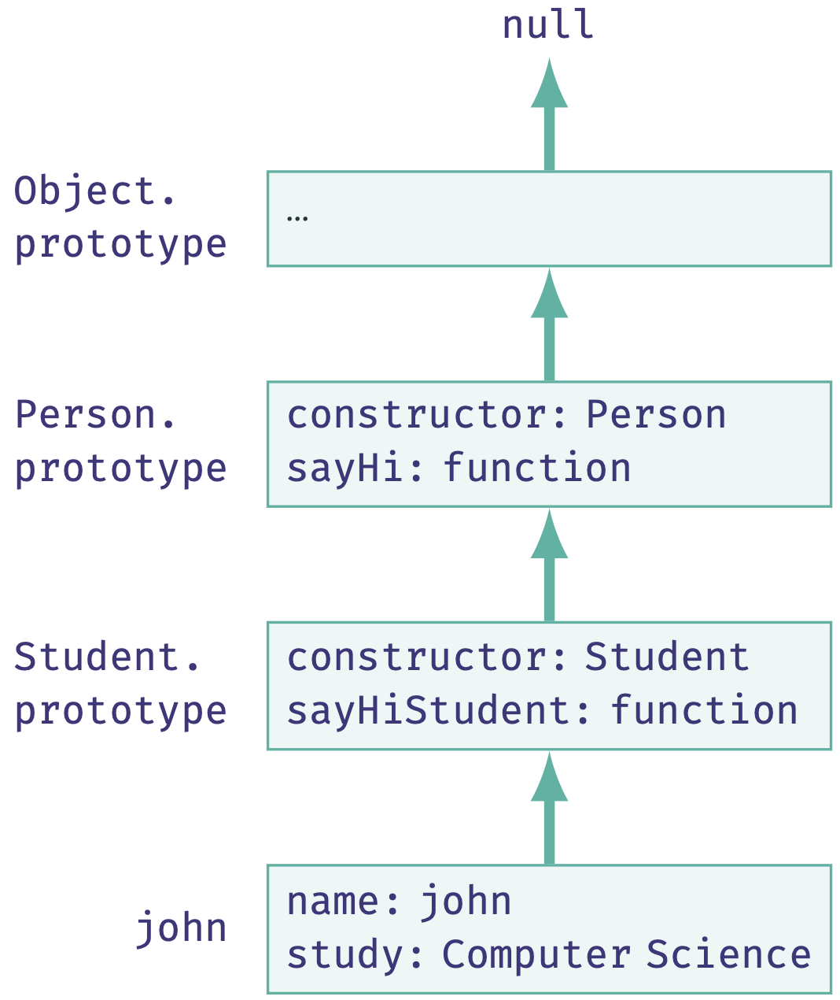
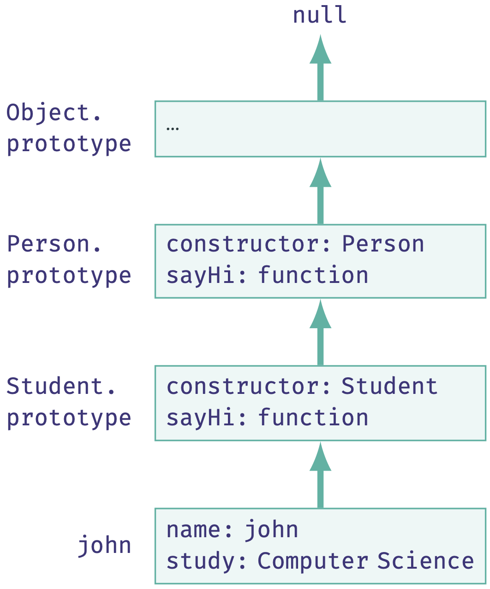

Web Dynamique côté Client (WDC)
La Programmation Orientée Objet en JavaScript
Dans ce chapitre
- Les objets en JavaScript
- La programmation orientée objet en JS
- Notion de prototype
- Héritage prototypal
- Introduction aux classes (depuis ES6)
- Encapsulation
- Objets standards
- Angular
- AJAX
Notion de prototype
- En JS, les objets ont tous une propriété cachée
[[Prototype]] - C'est une référence égale à
nullou qui désigne un autre objet - Cet autre objet est son prototype

Notion de prototype
[[Prototype]]est caché mais accessible de différentes façons- Une première façon est d'utiliser la propriété
__proto__ __proto__est un accesseur de[[Prototype]]- Tous les objets JS sont dotés de cette propriété (même les objets litéraux)
let animal = {
eats: true
};
let rabbit = {
jumps: true
};
rabbit.__proto__ = animal;
// => rabbit.[[Prototype]] pointe sur animal

Héritage prototypal
- L'intérêt premier des prototypes est l'héritage prototypal
- Si une propriété est introuvable dans un objet, JS va la chercher dans son prototype
- La propriété
eatsest rendu accessible àrabbitvia son prototypeanimal - On dit que
rabbithérite de la propriétéeatsdeanimal
let animal = {
eats: true
};
let rabbit = {
jumps: true,
__proto__: animal
};
console.log(rabbit.jumps); // true
console.log(rabbit.eats); // true (hérité de animal)
Héritage prototypal
- Héritage pour la lecture mais pas pour l'écriture
- À l'écriture, si la propriété est inexistante dans l'objet, elle est créée dans l'objet lui-même
let animal = {
eats: true,
walk() {
console.log("walk walk");
}
};
let rabbit = {
jumps: true,
__proto__: animal
};
rabbit.eats = false;
rabbit.walk = function() {
console.log("jump jump");
};
rabbit.walk(); // "jump jump"

Chaîne de prototypes
- Par défaut, le prototype d'un objet est un objet appelé
Object.prototype - Le prototype de
Object.prototypeestnull Object.prototypecontient plusieurs fonctions prédéfinies accessibles à tous les objets
let animal = {
eats: true,
walk() {
console.log("walk walk");
}
};
console.log(animal.toString()); // [object Object]

Chaîne de prototypes
- Plusieurs niveaux d'héritage prototypal forment une chaîne de prototypes
- Les propriétés sont héritées tout au long de la chaîne
let animal = {
eats: true,
walk() {
console.log("walk walk");
}
};
let rabbit = {
jumps: true,
__proto__: animal
};
let longEar = {
earLength: 10,
__proto__: rabbit
};
longEar.walk(); // walk walk (hérité de animal)
console.log(longEar.jumps); // true (hérité de rabbit)

Chaîne de prototypes
- Une chaîne de prototypes peut créer des conflits de noms de propriétés
thispermet de sélectionner la propriété de l'objet appelant
let a = {
x: 10,
calculate(z) {
return this.x + this.y + z;
}
};
let b = {
y: 20,
__proto__: a
};
let c = {
y: 30,
__proto__: a
};
console.log(b.calculate(30)); // 10 + 20 + 30 = 60
console.log(c.calculate(40)); // 10 + 30 + 40 = 80

Chaîne de prototypes
- La boucle
for...inénumère les propriétés, y compris celles héritées - La fonction
hasOwnPropertypermet de filtrer les propriétés héritées
let animal = {
eats: true
};
let rabbit = {
jumps: true,
__proto__: animal
};
for(let prop in rabbit) console.log(prop); // jumps, puis eats
for(let prop in rabbit) {
if (rabbit.hasOwnProperty(prop)) {
console.log(prop); // jumps
} else {
console.log(prop); // eats
}
}
Définir un prototype
- Plusieurs façons de définir/affecter un prototype à un objet
__proto__est progressivement abandonné par les navigateurs (raisons techniques)- Aujourd'hui, il n'est toléré que dans une définition littérale
- À la place, il faut utiliser les méthodes statiques dédiées
Object.setPrototypeOf(rabbit, animal); // définit le prototype de rabbit
console.log(Object.getPrototypeOf(rabbit) === animal); // true
Object.create() crée un nouvel objet et permet de spécifier son prototype
let rabbit = Object.create(animal, {
jumps: { value: true }
});
let rabbit = Object.create(animal);
rabbit.jumps = true;
Définir un prototype
- On peut également utiliser les constructeurs pour définir le prototype des objets créés
- En JS, les fonctions sont des types d'objets et ont une propriété
prototype - Il ne s'agit pas du
[[Prototype]]de la fonction mais d'une propriété interne appeléeprototype - Quand on utilise
new, l'objet créé a pour prototype la propriétéprototypede cette fonction
// création d'un objet vide
// avec la syntaxe constructeur
let myObj = new Object();

Définir un prototype
prototypedésigne un objet dont tous les objets créés avec le constructeur héritent- En modifiant cet objet, on modifie le prototype de tous les objets concernés
function Person(firstname, lastname) {
this.firstname = firstname;
this.lastname = lastname;
}
let john = new Person("John", "Doe");
Person.prototype.sayHi = function() {
console.log(`Hi, I'm ${this.firstname} ${this.lastname}`);
};
john.sayHi(); // Hi, I'm John Doe

Définir un prototype
Remarques
- Ne pas confondre la propriété
prototyped'une fonction et le[[Prototype]]de la fonction - Comme les fonctions sont des objets, elles ont elles-mêmes un
[[Prototype]] - Ce prototype est
Function.prototypepour toutes les fonctions - Tous les types d'objets standards suivent ce principe
- Par exemple, un tableau est un objet dont le prototype est
Array.prototype - Cela permet de bénéficier de fonctions prédéfinies comme
push,pop, etc.
Définir un prototype
Remarques

Définir un prototype
En résumé...
__proto__
let rabbit = {
jumps: true,
__proto__: animal
};
Définir un prototype
En résumé...
Object.setPrototypeOf()
let rabbit = {
jumps: true
};
Object.setPrototypeOf(rabbit, animal);
Définir un prototype
En résumé...
Object.create()
let rabbit = Object.create(animal, {
jumps: { value: true }
});
Définir un prototype
En résumé...
- Constructeur
function Rabbit(name) {
this.name = name;
}
Rabbit.prototype = animal;
let rabbit = new Rabbit("White Rabbit");
Les classes
- Syntaxe de base:
class Person {
constructor(name) {
this.name = name;
}
sayHi() {
console.log(`Hi, I'm ${this.name}`);
}
}
let john = new Person("John");
john.sayHi(); // Hi, I'm John
Person avec:- Une propriété
name - Un constructeur pour initialiser
name - Une méthode
sayHi()pour afficher un message
Les classes
- Une classe est en fait un raccourci syntaxique pour les constructeurs
- La classe
Personengendre la création de la fonctionPerson(name)dont le code est celui du constructeur
class Person {
constructor(name) { this.name = name; }
sayHi() { console.log(`Hi, I'm ${this.name}`); }
}
// Person est une fonction et plus précisemment un constructeur:
console.log(typeof Person); // function
console.log(Person === Person.prototype.constructor); // true
sayHi() est ajoutée à Person.prototype
console.log(Person.prototype.sayHi); // affiche le code de la méthode sayHi
console.log(Object.getOwnPropertyNames(Person.prototype)); // constructor, sayHi
Les classes
- Utilisation identique à celle d'un constructeur
const john = new Person("John");
john.sayHi(); // Hi, I'm John
newLes classes
- Par exemple pour l'héritage prototypal
class Student extends Person {
constructor(name, study) {
super(name); // appel du constructeur parent
this.study = study;
}
sayHiStudent() {
this.sayHi();
console.log(`and I study ${this.study}`);
}
}
Student hérite de Person et ajoute une propriété study ainsi qu'une méthode sayHiStudent() qui utilise la méthode sayHi() héritée de PersonLes classes
- En pratique, le
[[Prototype]]deStudent.prototypedésignePerson.prototype - Dés lors, il est naturel de pouvoir redéfinir des méthodes héritées
class Person {...}
class Student extends Person {
...
sayHiStudent() {
this.sayHi(); // appel de la méthode parent
console.log(`and I study ${this.study}`);
}
}
let john = new Student("John", "Computer Science");
john.sayHi(); // Hi, I'm John
john.sayHiStudent(); // Hi, I'm John and I study Computer Science

Les classes
- En pratique, le
[[Prototype]]deStudent.prototypedésignePerson.prototype - Dés lors, il est naturel de pouvoir redéfinir des méthodes héritées
class Person {...}
class Student extends Person {
...
sayHi() {
super.sayHi(); // appel de la méthode parent
console.log(`and I study ${this.study}`);
}
}
let john = new Student("John", "Computer Science");
john.sayHi(); // Hi, I'm John and I study Computer Science

Les classes
- Une classe peut aussi contenir des déclarations de méthodes statiques
class Person {
constructor(name) {
this.name = name;
}
static compare(personA, personB) {
return personA.name === personB.name;
}
}
let john1 = new Person("John");
let john2 = new Person("John");
console.log(Person.compare(john1, john2)); // true
this désigne le constructeur de la classeStudent.compare(...))Les classes
Remarques
Pour éviter les erreurs, il est fortement conseillé de s'imposer certaines règles d'utilisation:
- Déclaration explicite du constructeur
- Déclaration des propriétés dans la classe et initialisation dans le constructeur
- Toujours invoquer les méthodes dans le contexte de son objet (pas en callback)
- Ne pas modifier a posteriori la chaîne de prototypes établie par les classes
- S'abstenir d'utiliser les classes pour la création d'objets uniques
- Utiliser l'encapsulation...
Encapsulation
- Encapsulation: un objet fourni une interface publique pour le manipuler mais maintient son état interne de façon caché
- État interne = ses propriétés
- Interface publique = méthodes publiques pour manipuler les propriétés
- Il faut pouvoir limiter l'accès aux propriétés...
- ... et définir des getters et des setters pour les manipuler
Encapsulation
Champs de classe
- Dans les classes, les propriétés sont publiques par défaut et déclarées via le constructeur
- Il est possible de les déclarer/initialiser dans les classes directement
class Person {
name = "unknown";
constructor(name) {
this.name = name;
}
}
class Person {
name = "unknown";
}
Encapsulation
Getters et setters
- Pour définir les getters et setters:
class Person {
_name = "unknown";
get name() { // getter
return this._name;
}
set name(value) { // setter
if (value.length < 3) {
alert("Name is too short, need at least 4 characters");
return;
}
this._name = value;
}
}
Encapsulation
Getters et setters
- La propriété
_nameest exposée via les getters et setters sous le nomname - Le getter est invoqué automatiquement lorsqu'on accède en lecture
let person = new Person("John");
console.log(person.name); // John
person = new Person(""); // Name is too short...
console.log(person.name); // unknown
person.name = "Jack";
console.log(person.name); // Jack
undefinedEncapsulation
Propriétés protégées
- Dans cet exemple,
personcontient une propriété_name(et nonname)
for (let prop in person) {
console.log(prop); // _name
}
_
person._name = "Bob"; // contournement du setter
console.log(person.name); // Bob
Encapsulation
Propriétés privées
- Depuis ES2022, il est possible de définir des propriétés réellement privées avec
#
class Person {
#name;
constructor(name) {
this.#name = name;
}
get name() {
return this.#name;
}
set name(value) {
if (value.length < 3) {
alert("Name is too short, need at least 4 characters");
return;
}
this.#name = value;
}
}
let john = new Person("John");
console.log(john.name); // "John"
john.name = "Jo"; // "Name is too short..." et #name == "John"
john.#name = "Jo"; // erreur
Encapsulation
Propriétés privées
- Les propriétés privées ne sont accessibles que depuis l'intérieur de la classe
- Elles ne sont pas non héritées par les sous-classes
- Il n'est pas possible de rendre une propriété accessible uniquement aux sous-classes
- Même chose avec les méthodes
- Note : les propriétés privées ne sont pas manipulables avec la syntaxe
[]
Vérification de "types"
- Le polymorphisme nécessite parfois de pouvoir vérifier la classe d'un objet
- Pour cela, on utilise l'opérateur
instanceof
class Rabbit {...}
let rabbit = new Rabbit();
alert(rabbit instanceof Rabbit); // true
class Animal {...}
class Rabbit extends Animal {...}
let rabbit = new Rabbit();
alert(rabbit instanceof Rabbit); // true
alert(rabbit instanceof Animal); // true